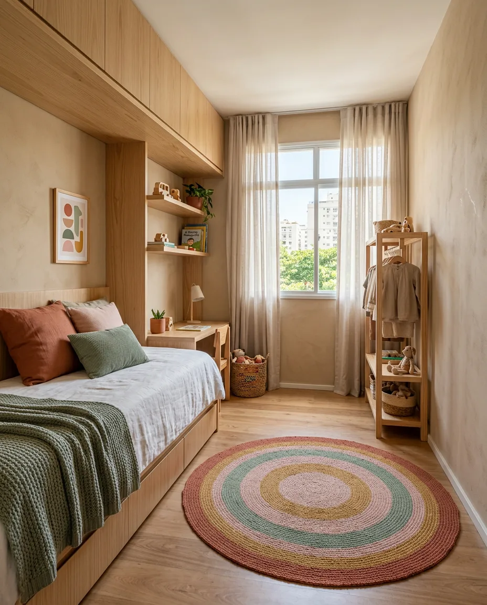
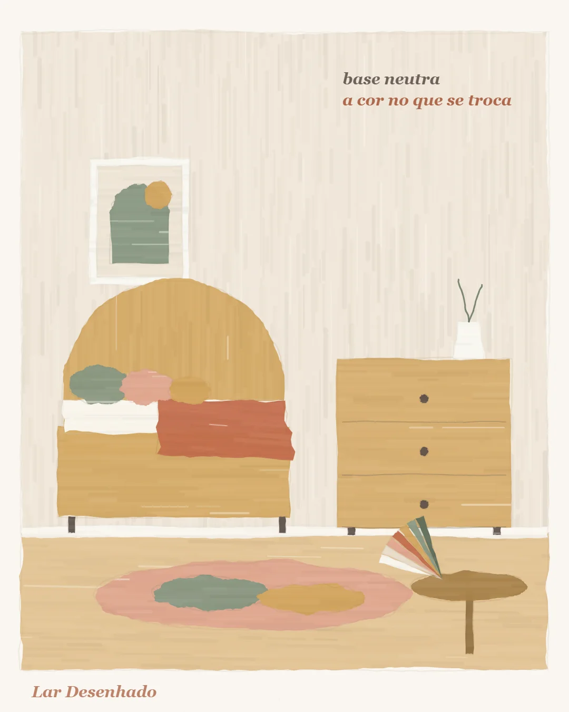

Cor, luz e tecido
Como escolher as cores do quarto infantil sem errar
Equipe Lar Desenhado · 13 de outubro de 2026

Para escolher as cores do quarto infantil, faça uma base suave e deixe a cor forte para as peças fáceis de trocar. Parede, marcenaria e piso ficam calmos; almofadas, manta, tapete e quadros trazem a alegria. Quando o gosto do seu filho mudar, você troca a almofada, não o armário.
Uma base calma, uma cor que conta a história
A base do quarto é o que dura: parede, marcenaria e piso. Quanto mais suave ela for, mais o quarto atravessa as fases da infância sem cansar.
A cor forte vai nas peças que saem com facilidade:
- almofadas;
- manta;
- tapete;
- quadros.
Ali você pode se divertir à vontade. E, quando a criança cismar com outra cor, a mudança cabe numa tarde.

Quantas cores usar
Uma paleta de 3 ou 4 tons resolve bem. Dois deles podem vir da família: a cor preferida da criança entra, sim. Se ela pede muito uma cor que você acha forte demais, não precisa proibir. Diminua a quantidade: em vez da parede inteira, a cor aparece no tapete, na cortina ou num quadro grande.
O vermelho e as cores muito intensas agitam, então funcionam melhor em pontos pequenos. Um ambiente colorido demais fica bagunçado, e não necessariamente mais infantil.
O tema é a criança, não um personagem
Personagens passam. O tema principal do quarto é a criança, com o que ela gosta e como ela é. O personagem entra nos acessórios, que se trocam sem sofrimento. Um "quarto de festa infantil", todo montado em torno de um personagem, tende a envelhecer em um ano.
Isso não tira a graça do quarto. Pelo contrário: um tapete vibrante sobre uma base calma chama atenção justamente porque há descanso em volta. Quando tudo grita ao mesmo tempo, o olho não sabe onde pousar, e a criança também sente.
Piso e marcenaria conversam
- Piso escuro: evite madeira escura também na marcenaria. O quarto fica pesado e parece menor.
- Piso claro e frio: a madeira aquece o ambiente e traz aconchego.
Como escolher a tinta sem se enganar
A cor na tela do celular não é a cor da lata. Para acertar:
- escolha de dia, com a luz da janela;
- olhe a amostra sobre fundo branco;
- pinte um pedaço da parede, espere secar e olhe de novo no dia seguinte.
A tinta molhada engana, e a luz da manhã é diferente da luz da tarde. Esse pedaço de parede pintado é a prova mais honesta que existe.
Anote quatro dados de cada tinta
Para repor ou retocar a pintura mais tarde, anote:
- o código;
- o nome;
- a marca;
- o acabamento.
O mesmo nome em duas marcas diferentes pode ser outra cor. Por isso, o nome sozinho não basta. Guarde essas quatro informações num lugar que você encontra com facilidade, como uma foto da lata ou uma nota no celular.
Vale lembrar que a luz do quarto muda a cor ao longo do dia. Uma parede que parece quente de manhã pode parecer fria no fim da tarde. Olhar a amostra em mais de um momento evita a surpresa de ver a cor "errada" já com a parede inteira pintada.
O que toca a pele
Lençol e fronha ficam em contato com a pele da criança por muitas horas. Prefira 100% algodão: é um tecido que respira e acolhe melhor.
Base suave e cor forte nas peças que se trocam: assim o quarto cresce com a criança, sem obra.
Para conferir antes de comprar
- A base (parede, marcenaria e piso) está suave?
- A paleta tem 3 ou 4 tons, com a cor preferida dela incluída?
- As cores fortes estão em peças fáceis de trocar?
- O personagem aparece só nos acessórios?
- Piso e marcenaria combinam no peso: escuro com claro, frio com madeira?
- A tinta foi testada na parede, de dia, e olhada no dia seguinte?
- Código, nome, marca e acabamento estão anotados?
- Lençol e fronha são 100% algodão?
Leia também
- Cama alta e mezanino: as medidas que deixam a brincadeira segura
- O quarto que cresce: como planejar hoje pensando na próxima fase
- Quarto infantil pequeno: o segredo é deixar o meio livre
Fontes
- Recomendações de projeto de escritórios especializados em quarto infantil
- Catálogos de cores dos fabricantes de tinta (para conferir código, nome e acabamento)